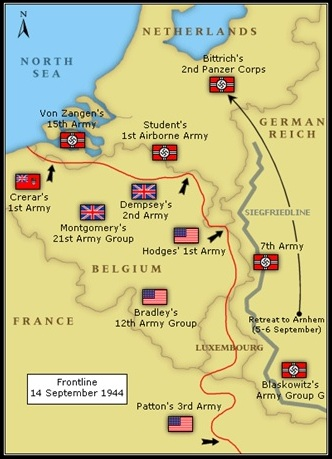
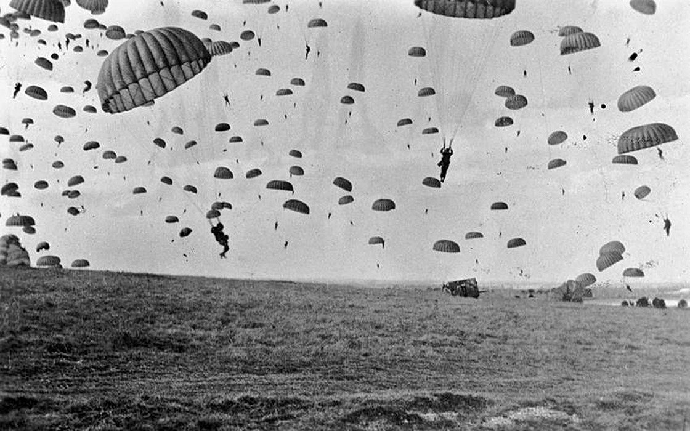
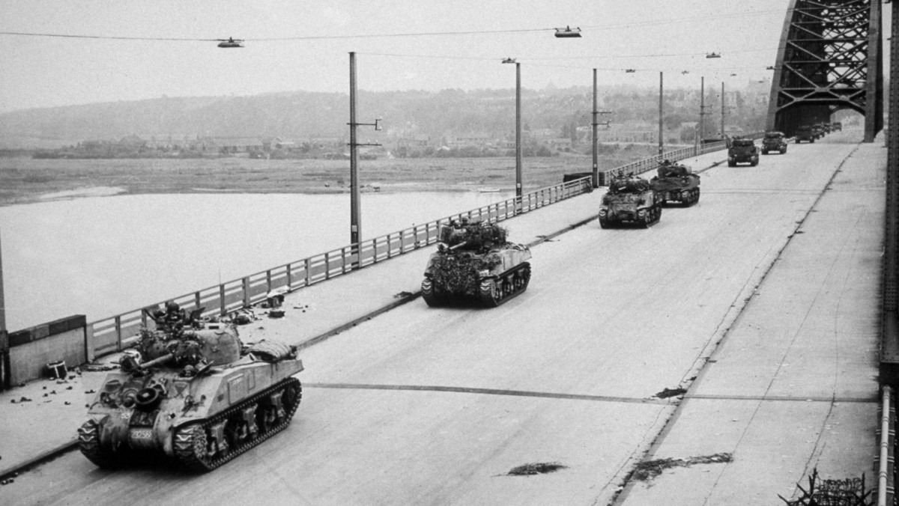

A Market Garden hadművelet a második világháború legnagyobb, legmerészebb ejtőernyős hadművelete, melynek célja Hollandia nyugati részének elfoglalása lett volna, mely lehetővé tette volna a szövetségesek számára a Ruhr-vidék bekerítését.
Hadművelet
Kezdődött: 1944. szeptember 17 • 1944. szeptember 17-én megkezdődött a Market Garden hadművelet. Délelőtt angliai támaszpontjaikról felszálltak az ejtőernyős egységeket szállító repülőgépek, délután kettő órakor pedig elindult a XXX. hadtest
a belga határtól. Már az első napon megmutatkoztak a nehézségek: csupán a 101. hadosztály teljesítette a feladatát, igaz, a besti hidat a németek még a kezükön tartották: az odaérkező amerikai ezred súlyos veszteségeket szenvedett, valamint
a soni hidat az 506. ezred előtt robbantották fel. Így a következő napon beérkező XXX. hadtest még egy napot késett, mivel pontonhidat kellett lefektetni a Wilhelmina-csatornán. Nijmegennél a 82. lsz. hadosztálynak keményebben kellett
harcolnia a német egységekkel – itt a németek gyorsabban ocsúdtak fel a hirtelen látvány okozta kábulatból, és a közeli német határról folyamatosan érkeztek az újabb német csapatok, így Gavin tábornok csapatainak a határ menti pozíciójukat
kellett megerősíteni; a hadművelet ideje alatt folyamatosan szivárogtak át a német határon át az ellenséges csapatok. Ezért Gavin a határ melletti Groesbeek falu közeli dombokat erősítette meg leginkább egységeivel, csak ez után indulhattak
a Maas hídja ellen, amelyet szeptember 20-án este nem sikerült elfoglalni, csak másnap reggel indítottak egy támadást, ami sikerrel járt: az ejtőernyősök egy része füstfüggönyben átkelt a Maason csónakokban, miközben a hadosztály másik
része a Maas bal partjáról jutott fel a hídra, a XXX. hadtest páncélosaival. A híd, ami túl messze volt Szeptember 17-én a brit egységek még könnyen bejutottak Arnhembe, igaz, John Frost alezredes egysége az arnhemi Rajna hídon már nem
tudott átkelni, mivel a folyó bal partján a 2. SS-páncéloshadtest gyülekezett. Elkeseredett harc kezdődött Arnhemért, mely során az utánpótlásként küldött egységek (így az 1. lengyel ejtőernyős dandár) is felmorzsolódtak. Model, látva
a britek szívósságát, kiadta a parancsot a rombolásra, melyet a németek végre is hajtottak, de a brit csapatokat csak lassan tudták kiszorítani Arnhemből. Mégis, a hadművelet nem Arnhemben dőlt el: Model Veghelnél ellentámadást hajtott
végre szeptember 21-én, amellyel csak rövid ideig tudták a németek átvágni a szövetségesek utánpótlási folyosóját, mégis a XXX. hadtestet vissza kellett fordítani, hogy visszaverje a németeket, akik egyébként a 101. hadosztállyal álltak
kemény harcban (a másik két brit szárazföldi hadtest még csak Sonnál járt). Szeptember 25-én a brit egységek maradékai megkapták a visszavonulási engedélyt, melynek Urquhart vezérőrnagy ironikusan a „Berlin” fedőnevet adta.
Parancsnokok
Bernard Montgomery (BRI)
Brian Horrocks (BRI)
Roy Urquhart (BRI)
Allan Henry (BRI)
James M. Gavin (USA)
Maxwell Taylor (USA)
Stanislaw Sosabowski (POL)
Walter Model (GER)
Wilhelm Bittrich (GER)
Kurt Student (GER)



SUMMARY
Operation Pegasus was a military operation carried out on the Lower Rhine near the village of Renkum, close to Arnhem in the Netherlands. Overnight on 22–23 October 1944, the Allied military forces, MI9, the British intelligence organization,
and the Dutch Resistance successfully evacuated 138 men, mostly soldiers trapped in German-occupied territory who had been in hiding since the Battle of Arnhem. On 20 October the Germans ordered residents of villages near Arnhem to leave
their homes by the 22nd. Deciding to take advantage of the confusion this would cause, the date for the operation was brought forward to the night of 22–23 October.